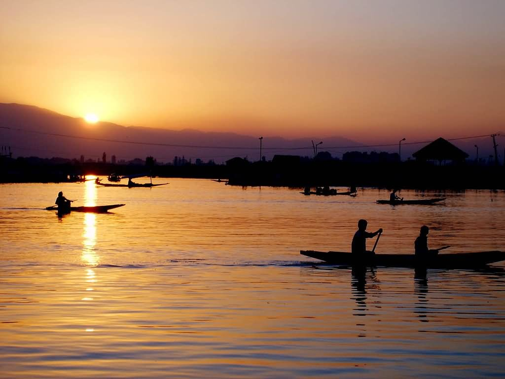

DAL LAKE

Dal is a lake in Srinagar (Dal Lake is a misnomer as Dal in Kashmiri means lake), the summer capital of Jammu and Kashmir. The urban lake, which is the second largest in the state, is integral to tourism and recreation in Kashmir and is named the "Jewel in the crown of Kashmir" or "Srinagar's Jewel". The lake is also an important source for commercial operations in fishing and water plant harvesting

HOW TO REACH ?
Nearest Airport:Srinagar
Nearest Railway Station: Srinagar
Nearest Bus Stand: Srinagar